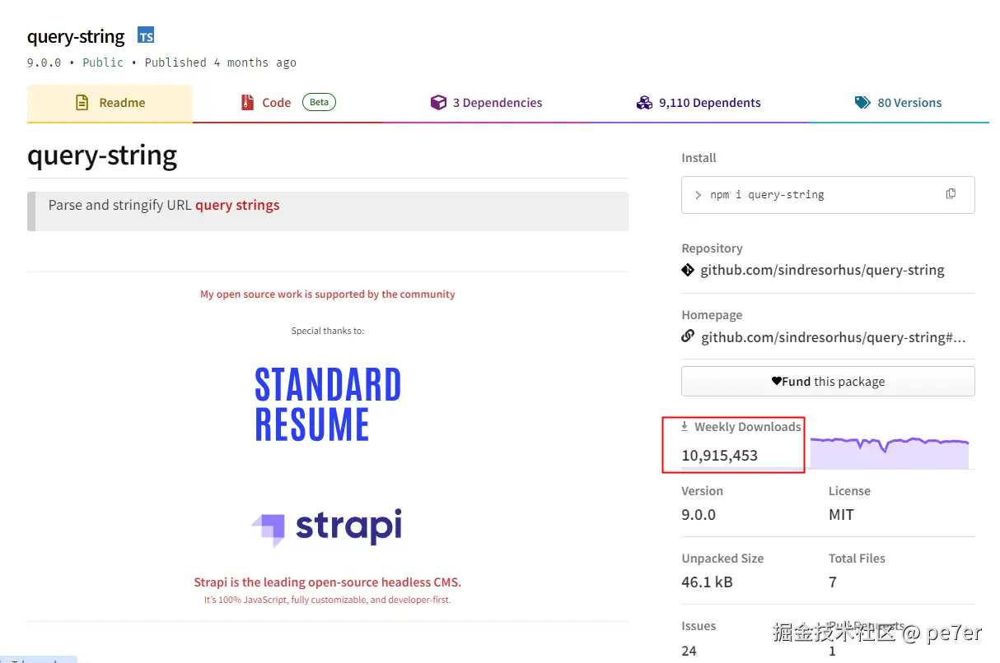
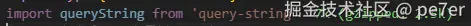
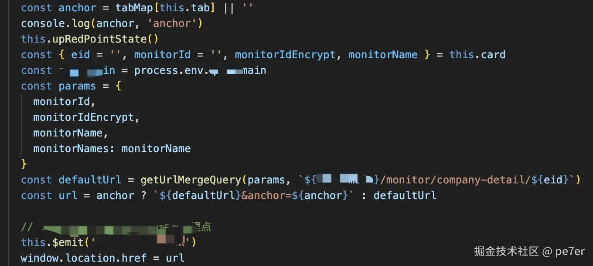

HaoTian · 2024-10-30 21:12:22
传统上，我们常使用字符串拼接或模板语法来构建 URL，例如：
const baseUrl = "https://api.example.com";
const userId = 12345;
const endpoint = baseUrl + "/users/" + userId + "/details";
console.log(endpoint); // "https://api.example.com/users/12345/details"
import { TYPE_EDIT } from "@/constants/type.ts";
const type = TYPE_EDIT;
const url = "https://api.example.com/userInfo";
const newUrl = url + "?type=" + type + "&model=1&share=1&fromModule=wechat";
console.log(urlUrl); // https://api.example.com/userInfo?type=TYPE_EDIT&model=1&share=1&fromModule=wechat
或使用 ES6 模板字符串：
const baseUrl = "https://api.example.com";
const userId = 12345;
const endpoint = `${baseUrl}/users/${userId}/details`;
console.log(endpoint); // "https://api.example.com/users/12345/details"
import { TYPE_EDIT } from "@/constants/type.ts";
const type = TYPE_EDIT;
const url = "https://api.example.com/userInfo";
const newUrl = url + `?type=${type}&model=1&share=1&fromModule=wechat`;
console.log(urlUrl); // https://api.example.com/userInfo?type=TYPE_EDIT&model=1&share=1&fromModule=wechat
虽然模板字符串在一定程度上提高了可读性，但这种方法仍存在几个问题：
为了解决这些问题，现代 JavaScript 引入了 URL 构造器，可以更优雅和安全地处理 URL。URL 构造器提供了一种更结构化和直观的方法来构建和操作 URL。
基本用法:
const baseUrl = "https://api.example.com";
const userId = 12345;
const url = new URL(`/users/${userId}/details`, baseUrl);
console.log(url.href); // "https://api.example.com/users/12345/details"
URL 构造器还提供了一种简便的方法来添加和操作查询参数：
const baseUrl = "https://api.example.com";
const userId = 12345;
const url = new URL(`/users/${userId}/details`, baseUrl);
url.searchParams.append("type", "EDIT");
url.searchParams.append("module", "wechat");
console.log(url.href); // "https://api.example.com/users/12345/details?type=EDIT&module=wechat"
假设我们有一个 URL，需要将一个数组作为查询参数添加到 URL 中。
const baseUrl = "https://example.com";
const url = new URL(baseUrl);
const arrayParam = ["value1", "value2", "value3"];
// 将数组转换为逗号分隔的字符串
url.searchParams.set("array", arrayParam.join(","));
console.log(url.toString()); // https://example.com/?array=value1,value2,value3
当我们获取 URL 并需要解析其中的数组参数时，可以使用URLSearchParams对象进行解析。
const urlString = "https://example.com/?array=value1,value2,value3";
const url = new URL(urlString);
const arrayParamString = url.searchParams.get("array");
// 将逗号分隔的字符串转换回数组
const arrayParam = arrayParamString ? arrayParamString.split(",") : [];
console.log(arrayParam); // ['value1', 'value2', 'value3']
以下是一个完整示例，包括拼接和解析数组参数的操作：
// 拼接数组参数到URL
const baseUrl = "https://example.com";
const url = new URL(baseUrl);
const arrayParam = ["value1", "value2", "value3"];
url.searchParams.set("array", arrayParam.join(","));
console.log(url.toString()); // https://example.com/?array=value1,value2,value3
// 解析数组参数从URL
const urlString = url.toString();
const parsedUrl = new URL(urlString);
const arrayParamString = parsedUrl.searchParams.get("array");
const parsedArrayParam = arrayParamString ? arrayParamString.split(",") : [];
console.log(parsedArrayParam); // ['value1', 'value2', 'value3']
有时我们可能会遇到需要处理多个同名参数的情况，例如?array=value1&array=value2&array=value3。可以使用URLSearchParams的getAll方法：
// 拼接多个同名参数到URL
const url = new URL(baseUrl);
const arrayParam = ["value1", "value2", "value3"];
arrayParam.forEach((value) => url.searchParams.append("array", value));
console.log(url.toString()); // https://example.com/?array=value1&array=value2&array=value3
// 解析多个同名参数从URL
const urlString = url.toString();
const parsedUrl = new URL(urlString);
const parsedArrayParam = parsedUrl.searchParams.getAll("array");
console.log(parsedArrayParam); // ['value1', 'value2', 'value3']
通过这些方法，可以更加优雅和简便地处理 URL 中的数组参数，提升代码的可读性和可维护性。
但实际情况往往比上面的示例更复杂，比如参数是一个对象、根据实际情况来设置参数的值、要处理undefined、'undefined'、0、'0'、Boolean、'true'、NaN等不同类型和异常的值，每次使用时都去处理显然是不合理的，这时候就可以将拼接和移除参数的函数封装成方法来使用。
/**
* 获取URL查询参数并返回一个对象，支持数组
* @param {string} urlString - 需要解析的URL字符串
* @returns {Object} - 包含查询参数的对象
*/
function getURLParams(urlString) {
const url = new URL(urlString);
const params = new URLSearchParams(url.search);
const result = {};
for (const [key, value] of params.entries()) {
if (result[key]) {
if (Array.isArray(result[key])) {
result[key].push(value);
} else {
result[key] = [result[key], value];
}
} else {
result[key] = value;
}
}
return result;
}
/**
* 设置URL的查询参数，支持对象和数组
* @param {string} urlString - 基础URL字符串
* @param {Object} params - 需要设置的查询参数对象
* @returns {string} - 带有查询参数的URL字符串
*/
function setURLParams(urlString, params) {
const url = new URL(urlString);
const searchParams = new URLSearchParams();
for (const key in params) {
if (params.hasOwnProperty(key)) {
const value = params[key];
if (Array.isArray(value)) {
value.forEach((val) => {
if (val !== undefined && !Number.isNaN(val)) {
searchParams.append(key, val);
} else {
console.warn(
`Warning: The value of "${key}" is ${val}, which is invalid and will be ignored.`
);
}
});
} else if (value !== undefined && !Number.isNaN(value)) {
searchParams.append(key, value);
} else {
console.warn(
`Warning: The value of "${key}" is ${value}, which is invalid and will be ignored.`
);
}
}
}
url.search = searchParams.toString();
return url.toString();
}
// 测试用例
const baseUrl = "https://example.com";
// 测试 getURLParams 方法
const testUrl =
"https://example.com/?param1=value1¶m2=value2¶m2=value3";
const parsedParams = getURLParams(testUrl);
console.log(parsedParams); // { param1: 'value1', param2: ['value2', 'value3'] }
// 测试 setURLParams 方法
const params = {
param1: "value1",
param2: ["value2", "value3"],
param3: undefined,
param4: NaN,
param5: "value5",
param6: 0,
};
const newUrl = setURLParams(baseUrl, params);
console.log(newUrl); // 'https://example.com/?param1=value1¶m2=value2¶m2=value3¶m5=value5'
npmjs www.npmjs.com/package/qs
它是开源免费项目，每周下载量将近 7 千万，支持任意字符，对象进行解析和拼接，支持@types/qs，导入后 11.3k，建议打包编译时排除在打包文件外用 cdn 替代。
npmjs www.npmjs.com/package/que…
它是开源免费项目，每周下载量达千万，支持任意字符、对象进行解析和拼接，支持 ts，导入后仅 2.5k 字节。
PC 和 H5 如果使用了微前端，建议一开始打包时就将依赖排除在打包文件外，用 cdn 链接来替代，仅加载一次就可以缓存下来，可以加速页面加载、减小打包文件大小。
当然更多时候我们在编写 h5、小程序项目的时候并不希望为了一个 url 解析参数和拼接参数的功能而引入一整个依赖。 这时候一个简单的解析和拼接的函数就可以搞定。
方法有多种实现方式，下面还有一种通过正则来实现的，但下面拼接的时候会忽略数字 0，所以参数一定要用字符串。
/**
* 合并查询参数到 URL 的函数
* 将给定的查询对象 Query 合并到指定的 URL 中
*
* @param {Object} query - 要合并到 URL 中的查询对象
* @param {string} url - 作为基础的 URL，默认为当前页面的 URL
* @returns {string} 生成的合并查询参数后的新 URL
*/
export function getUrlMergeQuery(query = {}, url) {
url = url || window.location.href;
const _orgQuery = getQueryObject(url);
const _query = { ..._orgQuery, ...query };
let _arr = [];
for (let key in _query) {
const value = _query[key];
if (value) _arr.push(`${key}=${encodeURIComponent(_query[key])}`);
}
return `${url.split("?")[0]}${_arr.length > 0 ? `?${_arr.join("&")}` : ""}`;
}
/**
* 从 URL 中提取查询参数对象
*
* @param {string} [url=window.location.href] - 要解析的 URL 字符串。如果未提供，则使用当前页面的 URL
* @returns {Object} - 包含提取的查询参数的对象
*/
export function getQueryObject(url = window.location.href) {
const search = url.substring(url.lastIndexOf("?") + 1);
const obj = {};
const reg = /([^?&=]+)=([^?&=]*)/g;
search.replace(reg, (rs, $1, $2) => {
const name = decodeURIComponent($1);
let val = decodeURIComponent($2);
val = String(val);
obj[name] = val;
return rs;
});
return obj;
}
下面是一段残存的未重构的代码，隐去了关键企业信息。像这样的代码，甚至更复杂的大段 if-else 组合模板语法、三目运算的代码比比皆是，后台代码业务逻辑变化时，会删除某个字段，增加某个字段，某种情况下需要某个字段，如果没有个 2-3 年甚至更多的编码经验，只会增加 bug。
更改后的代码，则简洁了许多，修改起来也不困难，阅读也很简单。
你的项目中一定提供了合适的方法，不要在用字符串拼接的方法来拼接参数了。